Öva till taxiförarlegitimation
Öva inför kunskapsprovet för taxiförarlegitimation: frågor med förklaring, övningsprov och regler för prisinformation – på svenska.
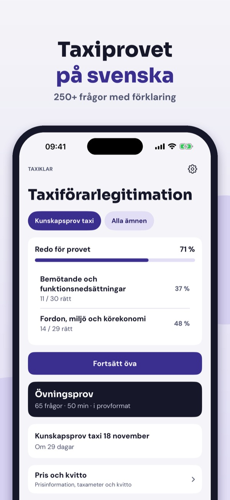
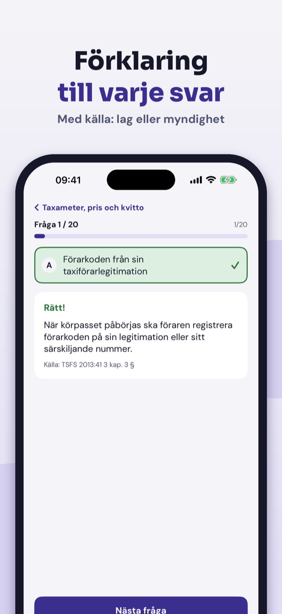
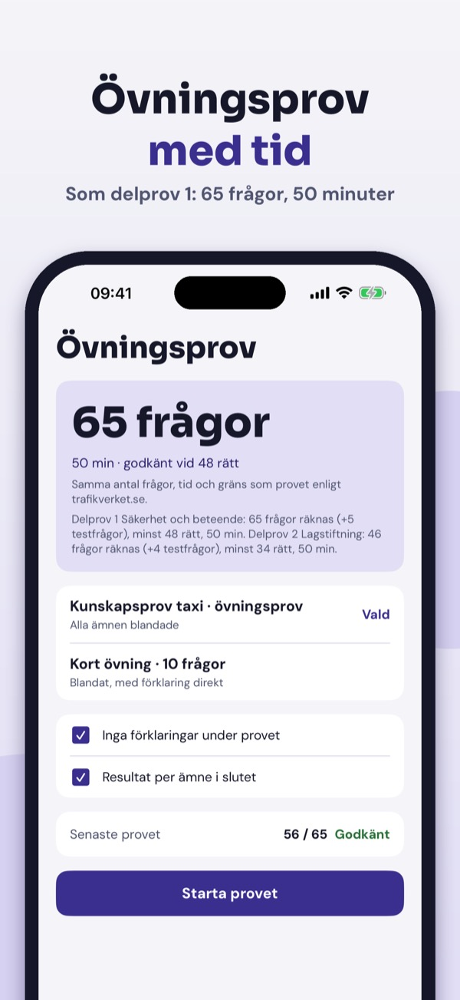
Taxiklar hjälper dig att öva inför kunskapsprovet för taxiförarlegitimation – med förklaringar, inte bara rätt svar.
• Frågor per ämne med förklaring till varje svar
Du kan öva 20 frågor per land, ordlistan, checklistan och Pris och kvitto utan köp. Fullversionen är ett engångsköp som låser upp alla frågor, övningsprov och statistik. Ingen prenumeration.
Taxiklar är fristående och inte kopplad till Transportstyrelsen eller Trafikverket. Provet gör du hos Trafikverket.
Terms of Use (EULA): https://www.apple.com/legal/internet-services/itunes/dev/stdeula/
Privacy: https://baytechbv.github.io/privacy/taxiprov-eu/
Oefen het taxi theorie-examen
Oefen voor het examen Vakbekwaamheid Taxichauffeur: vragen met uitleg, proefexamens en de regels voor tarieven – in het Nederlands.
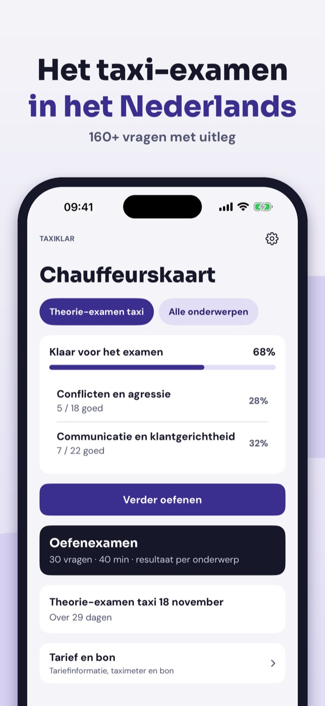
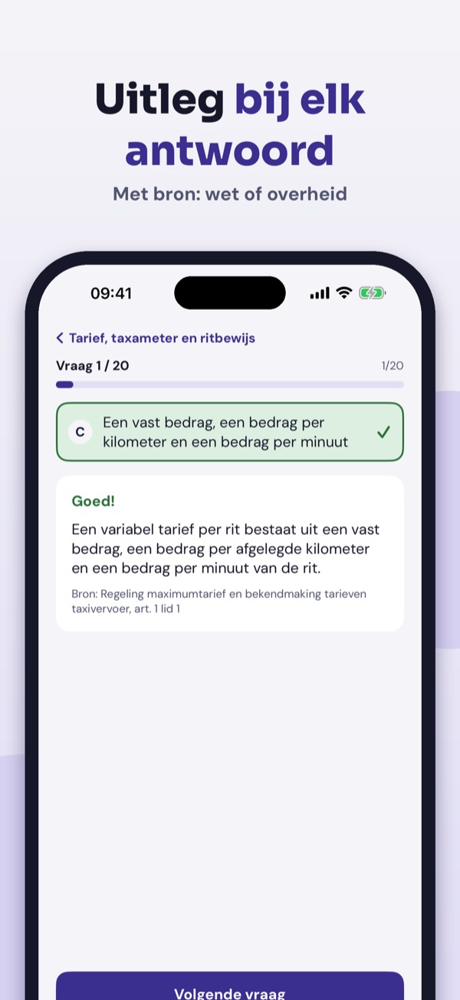
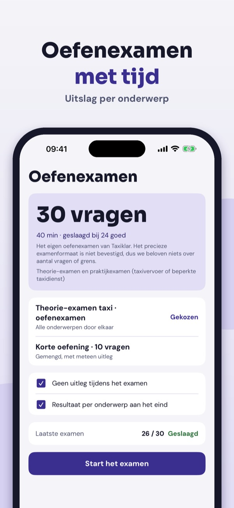
Taxiklar helpt je oefenen voor het theorie-examen Vakbekwaamheid Taxichauffeur – met uitleg, niet alleen het goede antwoord.
• Vragen per onderwerp met uitleg bij elk antwoord
Je kunt 20 vragen per land, de begrippenlijst, de checklist en Tarief en bon zonder aankoop gebruiken. De volledige versie is een eenmalige aankoop die alle vragen, proefexamens en statistiek ontgrendelt. Geen abonnement.
Taxiklar is onafhankelijk en niet verbonden aan het CBR of de overheid. Je examen doe je bij het CBR.
Terms of Use (EULA): https://www.apple.com/legal/internet-services/itunes/dev/stdeula/
Privacy: https://baytechbv.github.io/privacy/taxiprov-eu/
Teori til taxiprøven på dansk
Øv teorien til taxikørekort: spørgsmål med forklaring, prøveeksamen og reglerne for taxameter og priser – på dansk og uden internet.
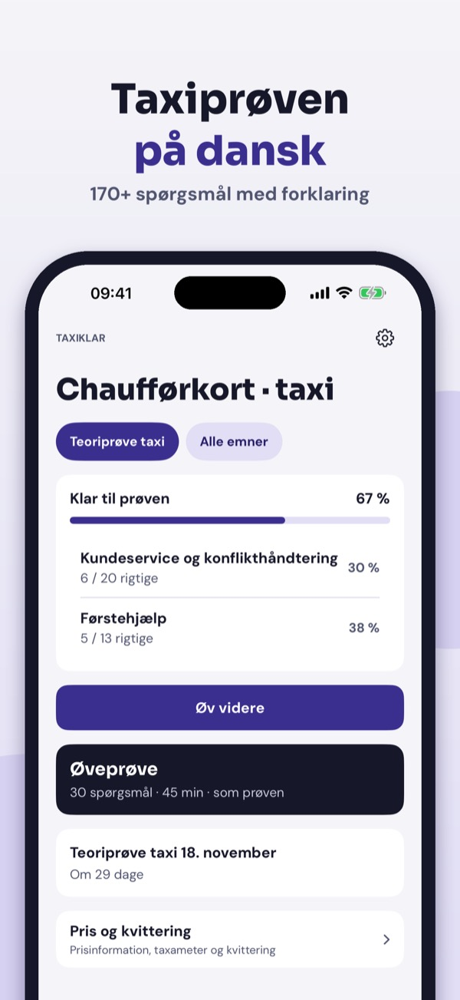
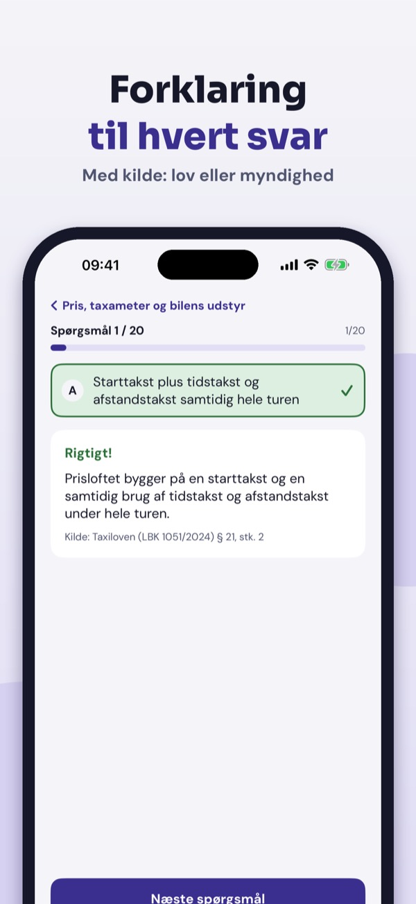
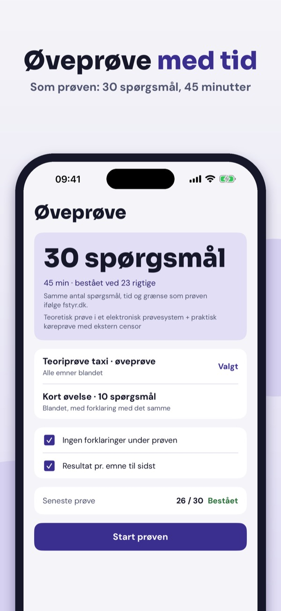
Taxiklar hjælper dig med at øve teorien til taxikørekortet – med forklaringer, ikke kun det rigtige svar.
• Spørgsmål pr. emne med forklaring til hvert svar
Du kan øve 20 spørgsmål pr. land, ordlisten, tjeklisten og Pris og kvittering uden køb. Den fulde version er et engangskøb, der låser alle spørgsmål, prøveeksamener og statistik op. Intet abonnement.
Taxiklar er uafhængig og ikke tilknyttet Færdselsstyrelsen eller politiet. Prøven tager du efter kvalifikationskurset.
Terms of Use (EULA): https://www.apple.com/legal/internet-services/itunes/dev/stdeula/
Privacy: https://baytechbv.github.io/privacy/taxiprov-eu/
Øv til teoriprøven for taxi
Øv teorien til kjøreseddel for taxi: spørsmål med forklaring, prøvetester og regler for taksameter og priser – på norsk og uten nett.
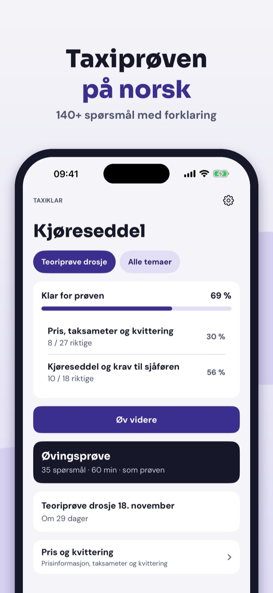
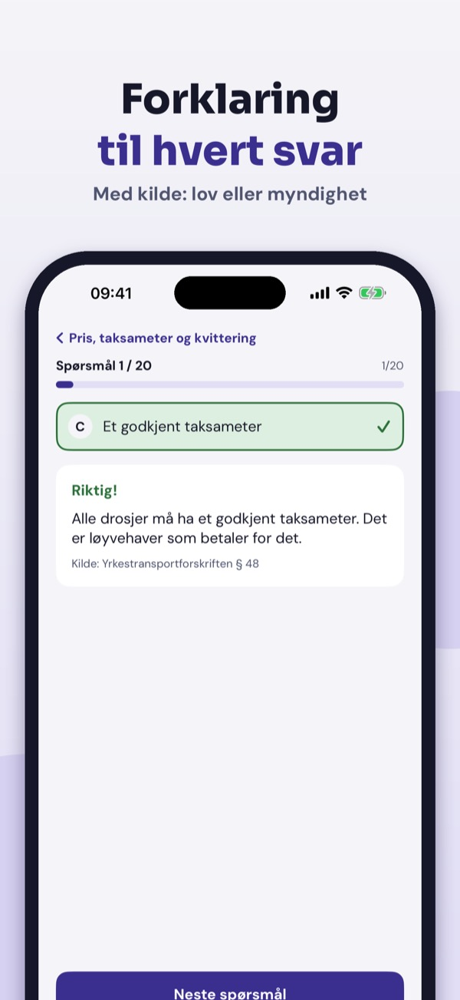
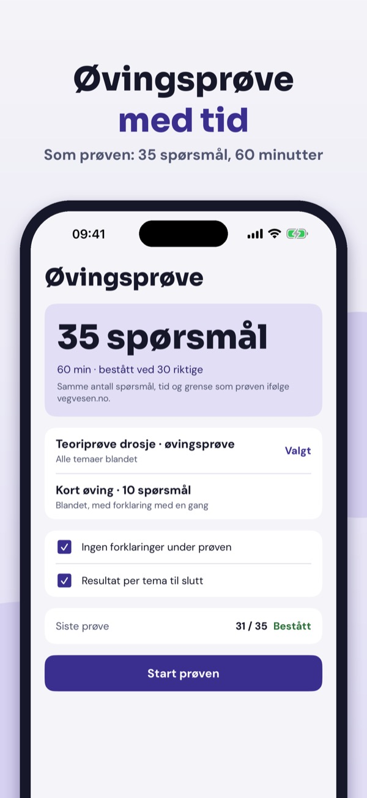
Taxiklar hjelper deg å øve teorien til kjøreseddel for taxi – med forklaringer, ikke bare riktig svar.
• Spørsmål per emne med forklaring til hvert svar
Du kan øve på 20 spørsmål per land, ordlisten, sjekklisten og Pris og kvittering uten kjøp. Fullversjonen er et engangskjøp som låser opp alle spørsmål, prøvetester og statistikk. Ingen abonnement.
Taxiklar er uavhengig og ikke tilknyttet Statens vegvesen. Prøven tar du hos Statens vegvesen.
Terms of Use (EULA): https://www.apple.com/legal/internet-services/itunes/dev/stdeula/
Privacy: https://baytechbv.github.io/privacy/taxiprov-eu/
Theorie für den P-Schein Taxi
Übe die Theorie für den Taxischein: Fragen mit Erklärung, Prüfungssimulation und Regeln zu Taxameter und Tarif – auf Deutsch und offline.
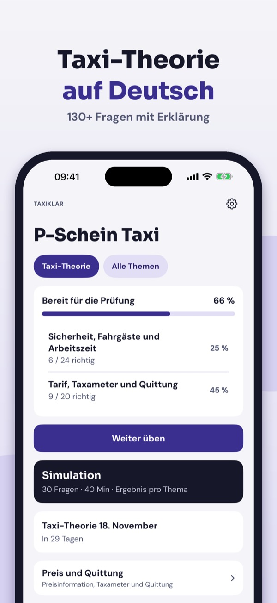
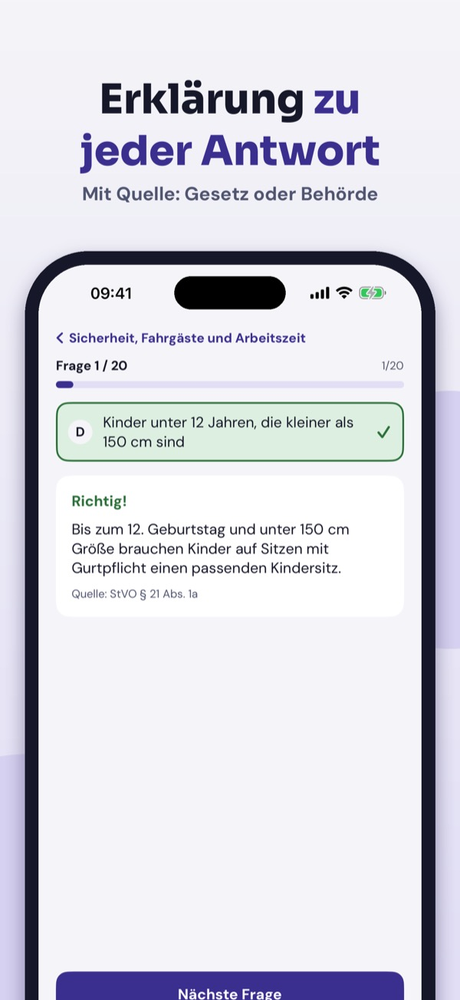
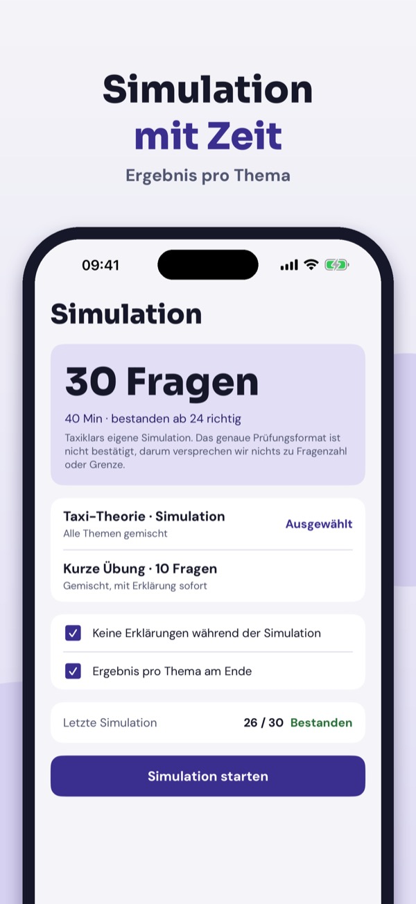
Taxiklar hilft dir, die Theorie für die Fahrerlaubnis zur Fahrgastbeförderung (Taxi) zu üben – mit Erklärungen, nicht nur Lösungen.
• Fragen nach Thema mit Erklärung zu jeder Antwort
20 Fragen pro Land, das Glossar, die Checkliste und Preis und Quittung kannst du ohne Kauf nutzen. Die Vollversion ist ein Einmalkauf und schaltet alle Fragen, Simulationen und die Statistik frei. Kein Abo.
Taxiklar ist unabhängig und nicht mit Behörden oder Kammern verbunden. Die Prüfung legst du bei der zuständigen Stelle ab.
Terms of Use (EULA): https://www.apple.com/legal/internet-services/itunes/dev/stdeula/
Privacy: https://baytechbv.github.io/privacy/taxiprov-eu/